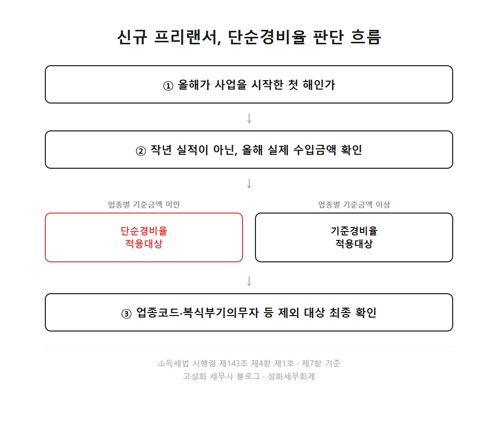
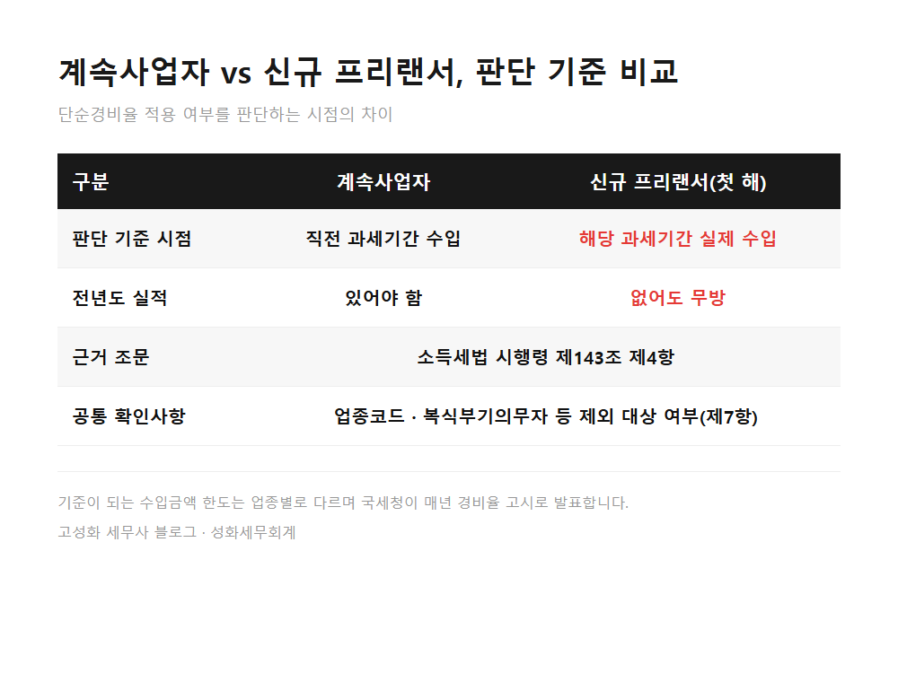
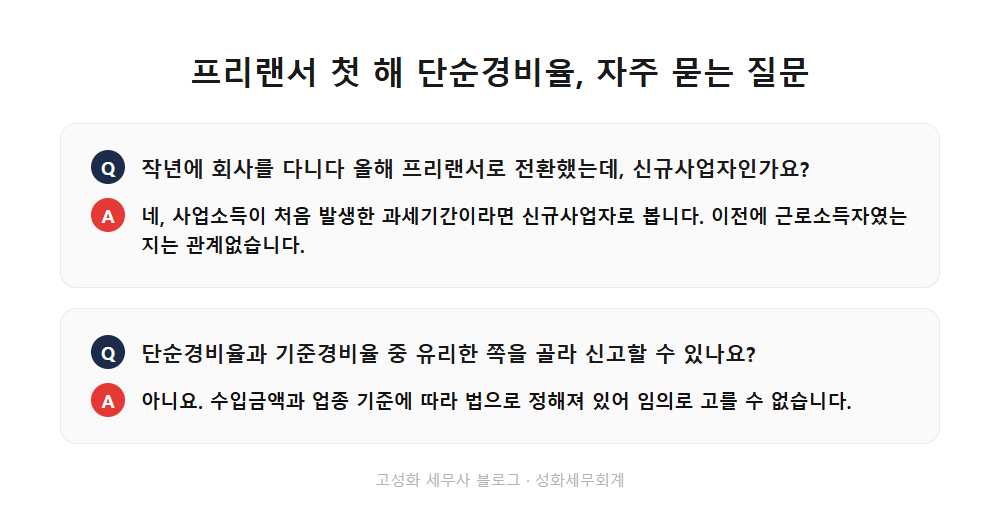

프리랜서 첫 해 단순경비율 적용 가능 여부 판단 기준

성화세무회계는 매년 5월이면, 프리랜서로 막 첫 해를 보낸 개발자나 디자이너분들에게 비슷한 질문을 자주 받습니다.
경비를 어떻게 인정받아야 하느냐는 질문입니다.
특히 3.3%를 떼고 대가를 받아온 인적용역 프리랜서일수록 이 대목에서 막막해하십니다.
사업을 시작한 첫 해에는 작년 매출이라는 게 아예 없습니다. 그러니 "그럼 저는 뭘 기준으로 경비를 인정받나요?"라는 질문이 나오는 게 당연합니다.
- 신규 프리랜서는 무엇을 기준으로 판단받나
- 첫 해 단순경비율, 적용되는 경우와 확인할 두 가지
한눈에 보기



자주 묻는 질문
작년에 회사를 다니다가 올해 프리랜서로 전환했는데, 이것도 신규사업자인가요?
네, 프리랜서로서 사업소득이 처음 발생한 과세기간이라면 신규사업자로 봅니다. 이전에 근로소득자였는지는 관계없습니다.
단순경비율과 기준경비율 중 제가 유리한 쪽으로 골라서 신고할 수 있나요?
아닙니다. 수입금액과 업종별 기준에 따라 적용 대상 여부가 법으로 정해져 있어 임의로 고를 수 없습니다. 다만 기준경비율 대상이라도 장부를 기장하면 더 유리해지는 경우가 있어, 이 부분은 따로 따져볼 필요가 있습니다.
경비율 기준금액은 어디서 확인하나요?
국세청이 매년 발표하는 기준경비율·단순경비율 고시에서 업종별 기준금액을 확인할 수 있습니다. 해마다 달라질 수 있으니 신고 때마다 최신 고시를 확인하시는 게 안전합니다.
정리하면
신규 프리랜서는 전년도 실적이 아니라 올해 실제 수입금액을 기준으로 단순경비율 여부를 판단받습니다. 소득세법 시행령 제143조 제4항 제1호에 나오는 내용입니다.
첫 해라고 무작정 불리하다고 단정할 이유는 없습니다.
다만 업종코드와 제외 대상 여부까지 함께 확인해야 정확한 결론이 나옵니다. 이런 것까지 물어봐도 되나 싶으실 텐데, 오히려 이런 사소한 확인이 나중에 큰 차이를 만듭니다.
성화세무회계는 프리랜서 첫 종합소득세 신고를 자주 다루고 있습니다. 업종코드 확인부터 신고까지, 편하게 문의해주세요.
본문 전체와 근거 조문은 블로그에서 확인하실 수 있습니다.